About me
I am Mattia, I am 25 years old, italian and I live in Munich. I have a bachelor in management engeneering and my favorite field is the project management. Some time ago I started developing a passion for mechanical watches, especially vintage watches. This blog is a little surprise where my watches are collected, a little of their history and some features related to them.
Enjoy the reading!
Omega Speedmaster Professional
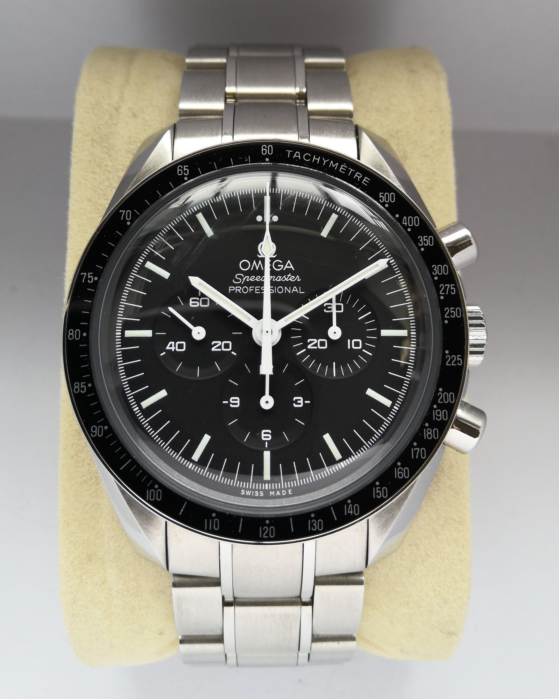
The Omega Speedmaster Professional was the watch from which it all began. With a 42 mm case diameter, small seconds dial, 30-minute and 12-hour counters and chronograph hand, the watch is perhaps the most famous among chronographs, because it was the only wristwatch to overcome NASA’s arduous selection to equip the Apol astronauts with a reliable chronograph. That’s how the Omega Speedmaster cal. 321 ref. 145. 012 worn by Buzz Aldrin was the first watch to land on the moon. Calibre 321 was replaced by calibre 861 before and calibre 1861 after.
Reference: 311.30.42.30.01.005
Price: 3400 Euro (August 2019)
Tudor Black Bay 58
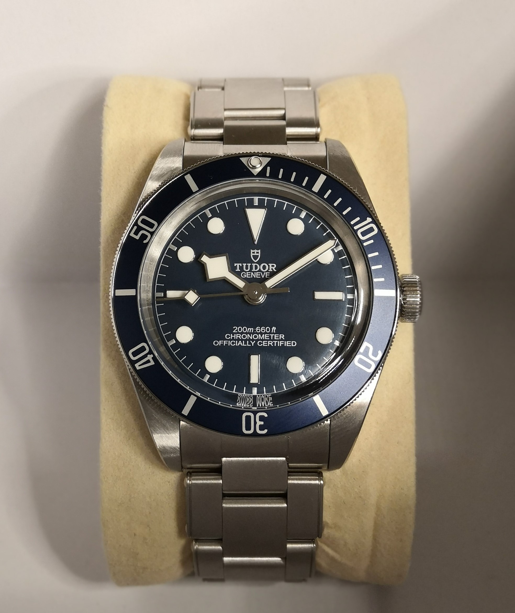
Tudor Black Bay 58 was my graduation gift. Tudor’s diver line was born in 1958 when the first submarine crossed the Arctic ice cap of the North Pole. It was this feat that inspired the maison that began to produce diver watches with a resistance of up to 20 atmospheres. Even the model in question, with 39 mm case diameter, can count on a waterproofness of 200 m. The recent history of Tudor presents us with a brand always full of innovations, so much so that many of the new diver and chrono models are increasingly difficult to find in dedicated stores, so we rely on the reseller market which still has average prices.
Reference: 79030B
Price: 3350 Euro (September 2021)
UNIVERSAL GENEVE POLEROUTER
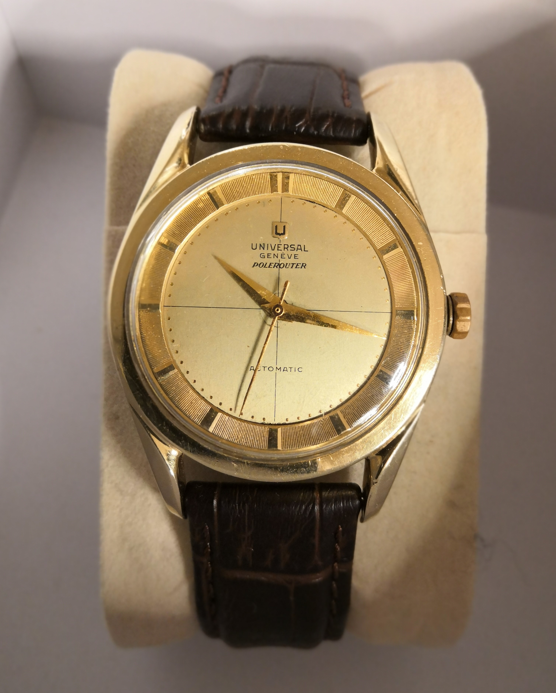
The polerouter was born in the 1950s, when Universal Geneve was commissioned by Scandinavian Airlines System to produce a watch resistant to magnetic fields capable of flying over the North Pole, in order to reduce the duration of America-Europe journeys. Universal Geneve entrusts the design of the watch to Gerald Genta. In 1954 the watch was presented to the public under the name of 'Polarouter', a name that changed the following year to become 'Polerouter'. The watch has a very exclusive and elegant appearance, given by the gold plating of the case and the small size of 35mm. For a very short time (maximum 2 years), the watch is equipped with the automatic hammer or bumper caliber 138SS, like the watch in question. In 1958 the new automatic caliber 215 with micro-rotor was introduced, which was perfected over the years until 1969, the last year of production of the polerouter.
Reference: UG 20217-5
Price: 550 Euro (November 2020)
MUST DE CARTIER
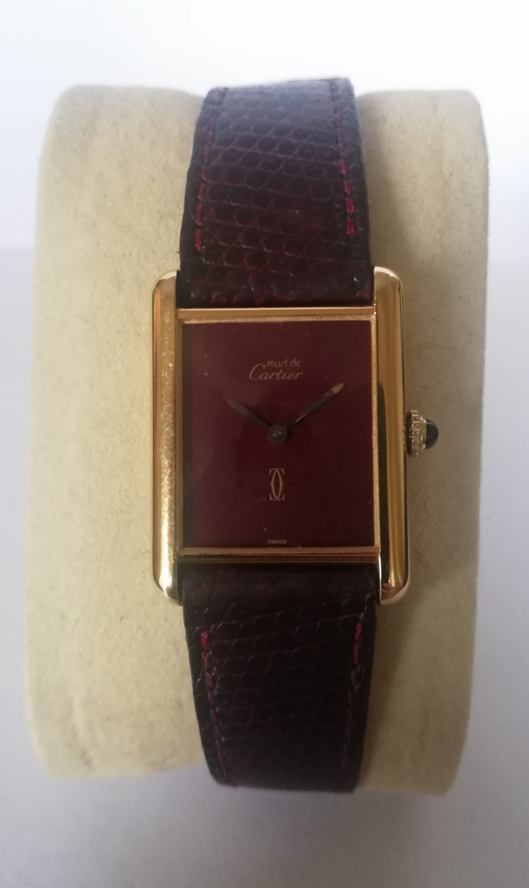
The "Le Must" collection represents an important milestone for Cartier. After the death of the famous Louis Cartier, his successors struggled to keep the company going, which was facing a long dark period. Thirty years after his death, the maison was acquired by a group of investors and it would be the "Le Must" line, together with some restyling of famous models, to revive the company, bringing it back to the privileged position it deserved to have. The watches of this particular line had more affordable prices, thanks to the use of gold-plated silver, often fitted with quartz movements and their birth is also due to the company's willingness to counter the counterfeit market, selling Cartier watches at more affordable prices. Here in the photo you can see my manual-winding Must de Cartier watch, with a gold-plated case measuring 23x31mm, with a particular and refined burgundy dial.
Reference: unknown
Price: 850 Euro (April 2022)
SEIKO 7A48

It reads Seiko 7A, it means the first quartz chronographs in history. The family was born with the 7A28 caliber, to which minor modifications are made in order to add more complications to the watch. This is where the famous Seiko 7A38 and 7A48 come from. Shown here is my Seiko 7A48, moon phase chronograph, 37mm case diameter, with original bracelet. The 7A quartz calibers were considered high-end, had great popularity and were not only fitted to Seiko watches. Small curiosity: in the second half of the 1980s the Cartier 'Ferrari Formula' had this movement.
Reference: 7A48-7000
Price: 180 Euro (October 2019)
SEIKO ALPINIST
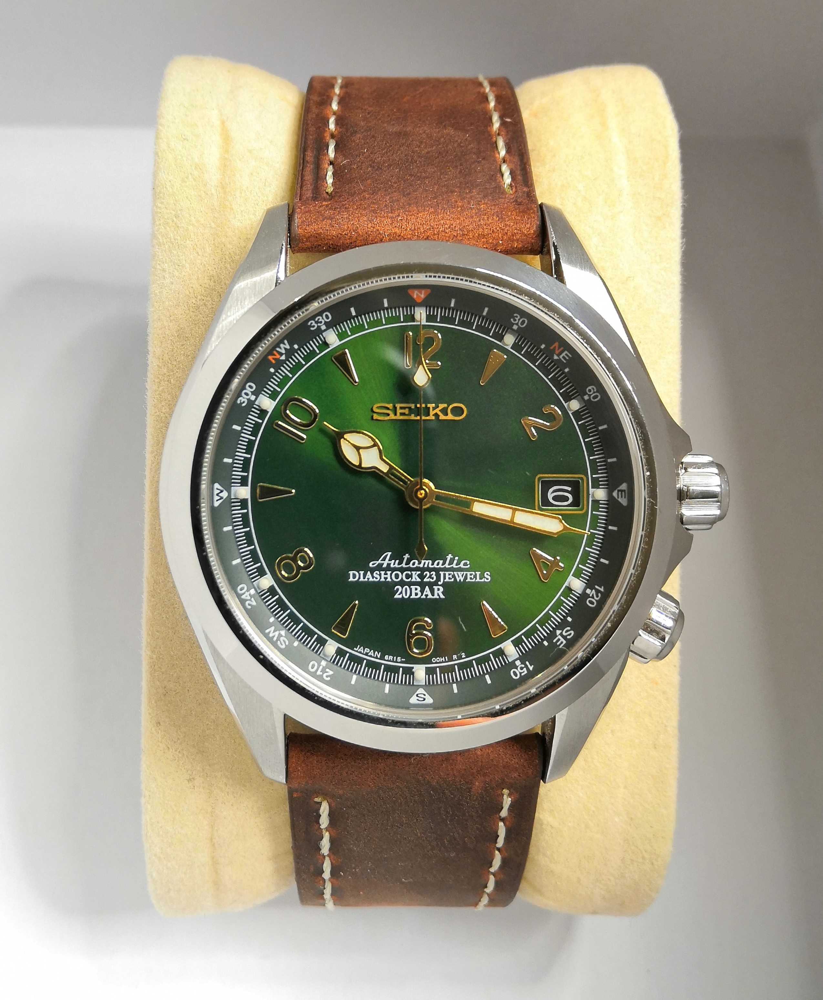
The Alpinist is the first sports watch from Seiko and was born in 1961 with the aim of providing Japanese climbers and other sportsmen with a reliable timepiece. The aesthetics of the watch changes a lot over the years and the SARB line introduced in 2006 with its famous design is an instant success. Probably a modern day watch enthusiast if you think about the Seiko Alpinist, view the model with green dial and brown strap, which you see here in the photo. The 38mm diameter watch, with 200m of water resistance and screw-down crown, mounts the automatic caliber 6R15, introduced for the first time in 2006. The peculiarity of the watch is the second crown at 4 o'clock, which moves the internal bezel with the indications of the 4 cardinal points.
Reference: SARB017
Price: 440 (September 2019)
RAKETA COPERNICUS
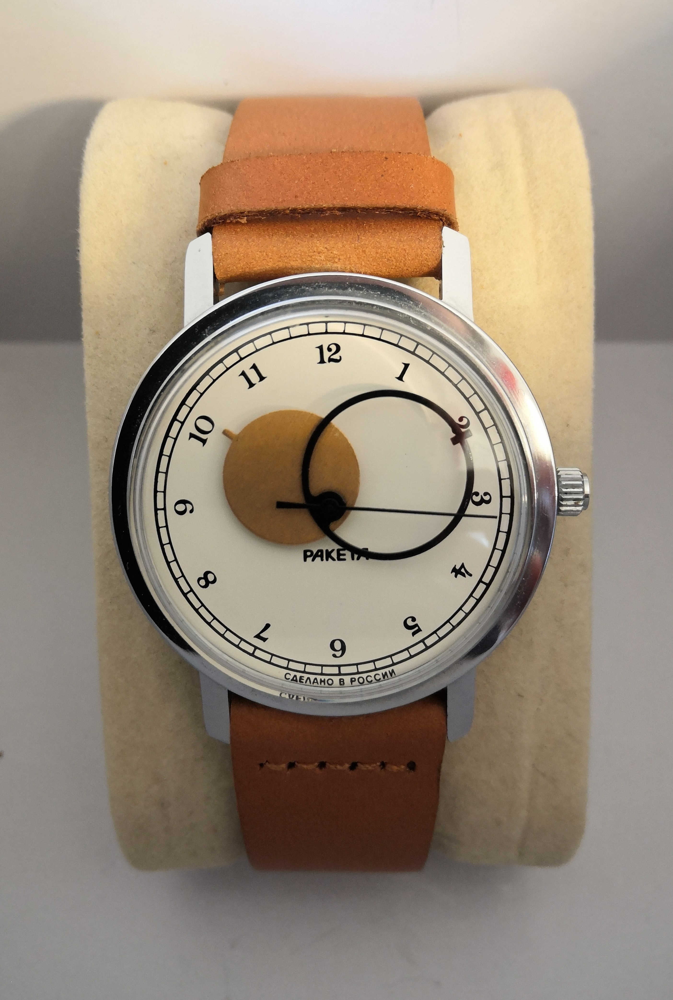
The Copernicus Raketa is certainly a recognizable watch and its name tells us more about its particular hands, or better spheres. That of the hours represents the sun and that of the minutes the planet Earth. The clock was named to celebrate the 500th anniversary of the birth of Copernicus, father of the heliocentric theory. Small curiosity: when this watch and others of the Raketa brand landed on the Italian market, they were so successful that it was not possible to see them exhibited anywhere and created problems for the producers, who initially failed to satisfy the request. The 35mm diameter watch is equipped with the hand-wound caliber 2609HA. This turns out to be quite spartan and simple, but all in all robust and reliable.
Reference: 142
Price: 80 Euro (Juni 2020)
OMEGA GENEVE
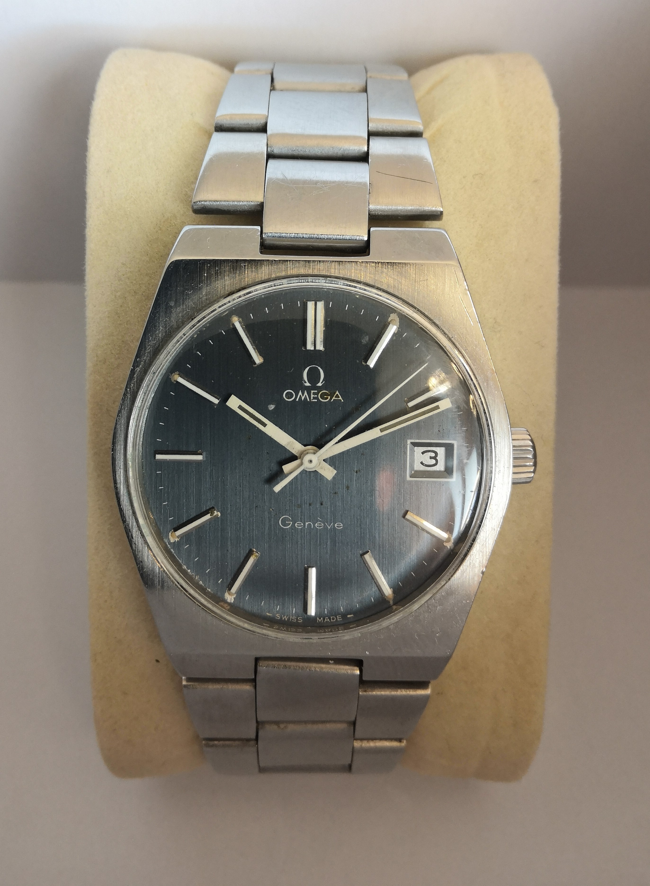
I wish I could say more, but it is not easy to find information on this watch. While the automatic version seems to have been more popular, this manual winding is more difficult to find. Dating back to the 70s, this omega with integrated bracelet and angular lines confirms the trend of those years, just think of Audemars Piguet's Royal Oak, born from the pencil of Gerald Genta. Thanks to its particular lines and its blue dial it has long been my favorite watch. The watch is powered by the Omega caliber 613. Derived from the successful series of calibers 550, it differs because it is manually wound and because the gooseneck adjustment is replaced with a cheaper one.
Reference: 1360050
Price: 360 Euro (January 2020)
ORIENT KAMASU
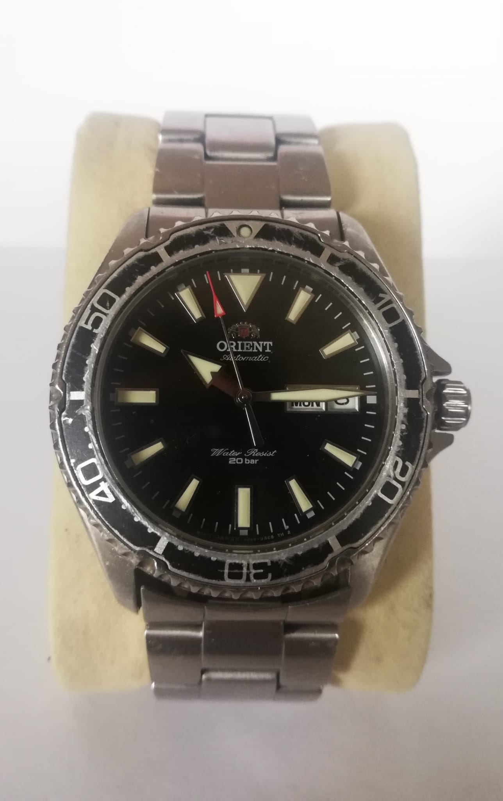
A few years ago I was looking for a waterproof, resistant watch to wear every day at work and with a good value for money. The choice was not very difficult, because in that price range (considering its characteristics) it does not have many opponents. The full-link bracelet, the sapphire crystal, the screw-down crown and the recognizable but not excessive design made the choice really be the Kamasu, the watch I wore more than any other.
Reference: RA-AA0001B19B
Price: 200 Euro (November 2019)
ZENITH 1518
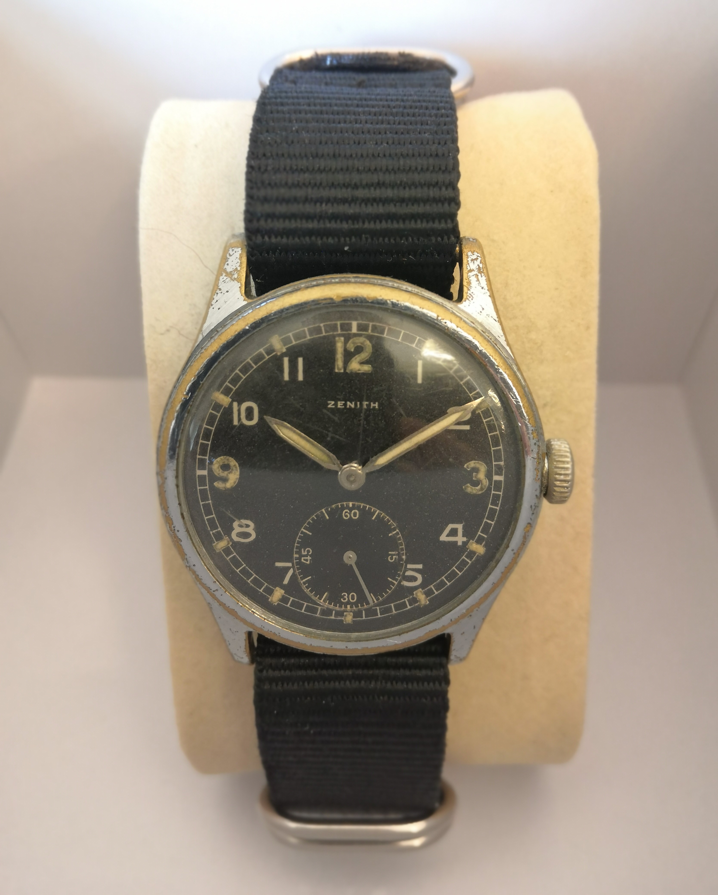
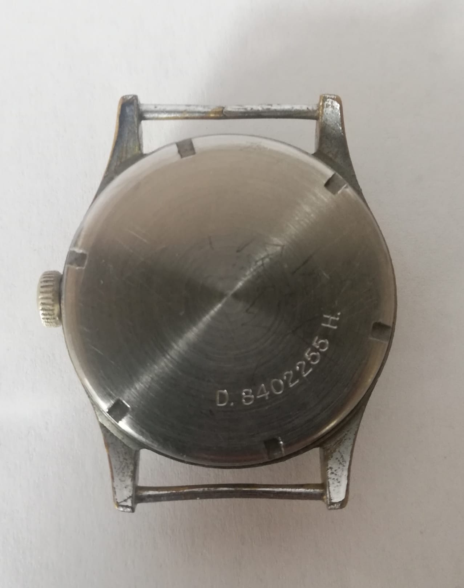
The Zenith 1518 was the first military watch in my collection. Dated to 1943/1944, the watch was one of the many commissioned by Germany to supply its armed forces during the Second World War. Military timepieces are often characterized by a very common design, so the authenticity is often given by the assignment engraved on the caseback. In this particular model the letters D and H, respectively at the beginning and at the end. These two letters mean "Dienstuhr Heer", which we could translate as "watch in the service of the army". The number between the two letters is precisely the assignment number, which corresponded to a soldier.
Military watches are an important pillar of collecting. They faced a war and therefore their availability is not so obvious, but perhaps the most important aspect is the historical factor. Curiosity: I bought the watch at an online auction and managed to win it at an advantageous price because the seller had omitted both the reference and that it was a military watch in the description. The watch has 34 mm in diameter, mounts the caliber 12 4-6 with manual winding, has a screw back, black dial, classic in military watches to reduce the visibility of the wearer, with small seconds at 6 o'clock and chromed brass case.
Reference: 1518
Price: 222 Euro (July 2020)
ZENTRA KRIEGSMARINE
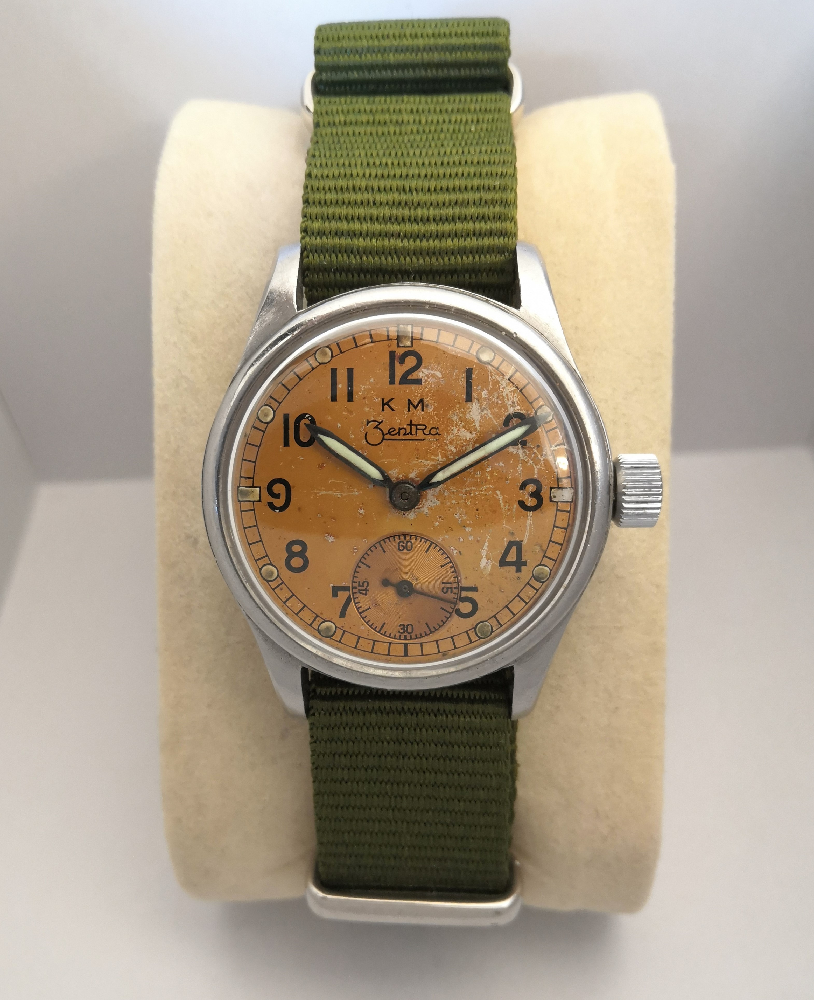
K M. stands for Kriegsmarine and is therefore the watch with which Germany refueled the navy during the Second World War. If when we think of the military watch, we think of it as black, it is time to expand our horizons. The watches assigned to the navy, unlike the common black dial, had a white dial to improve visibility in low-light environments such as submarines. This model, with 31 mm in diameter, differs in a particular coffee color and the steel case, a material quite in demand at the time and used only on a few watches.
Reference: unknown
Price: 200 Euro (January 2021)
UNIVERSAL GENEVE WILHELMINA
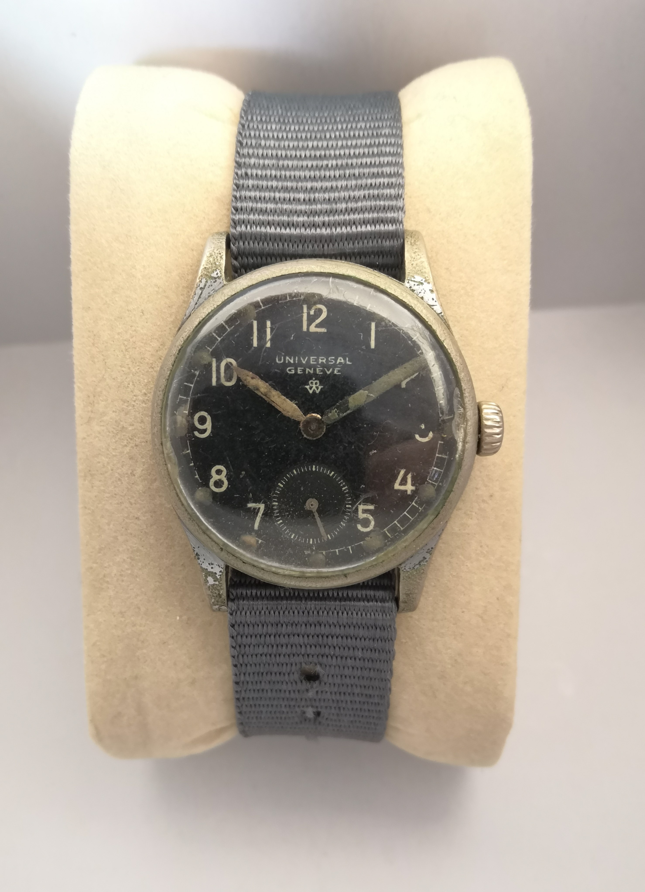
The W of Wilhelmina, Queen of Holland from 1890 to 1948, under the Universal Geneve brand, makes this watch very desirable for some reason even though it is perhaps the least military of the military watches. Universal Geneve began manufacturing these watches in 1938 and will continue to produce them until the first half of the 1940s. These timepieces, however, did not exactly fight a war. Holland was occupied militarily by Germany within a few days: the attack began on 10 May 1940 and on 15 May 1940, after the bombing of Rotterdam, the Dutch forces surrendered and the queen fled to London. The 30mm diameter watch is powered by the cal. UG 262, although not widely used during the Second World War, was used by the Dutch military in colonial territorial conquests. Small curiosity: I won the watch at an online auction for 80 euros because the photos of the user made it look like a very bad condition. In the end, it only took a little bit of polywatch to bring him back to life.
Reference: unknown
Price: 80 Euro (November 2021)
MILITARY RADIO WATCH
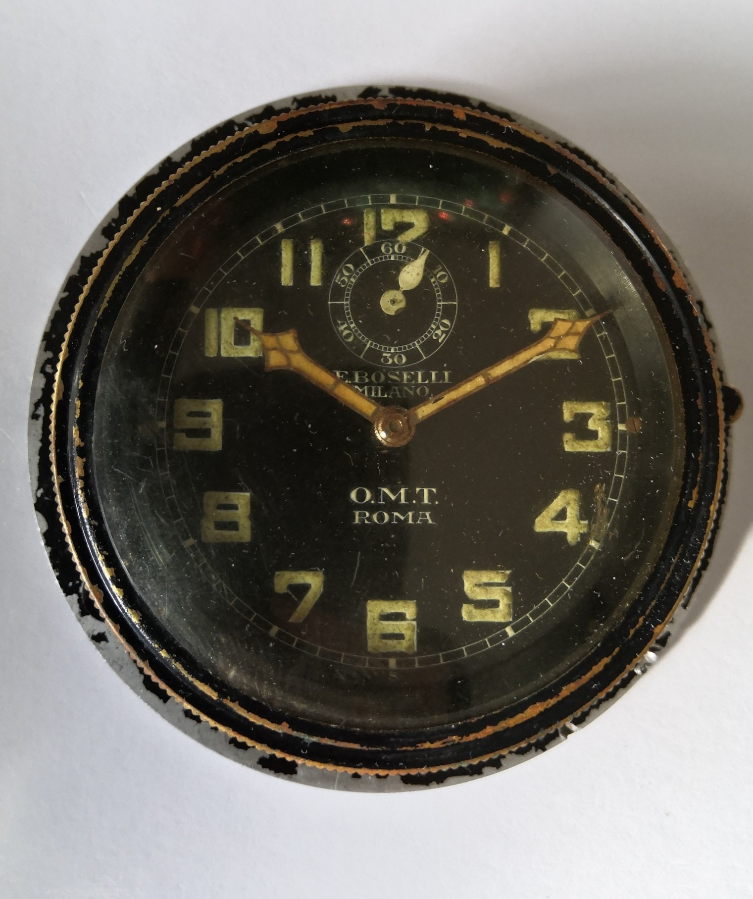
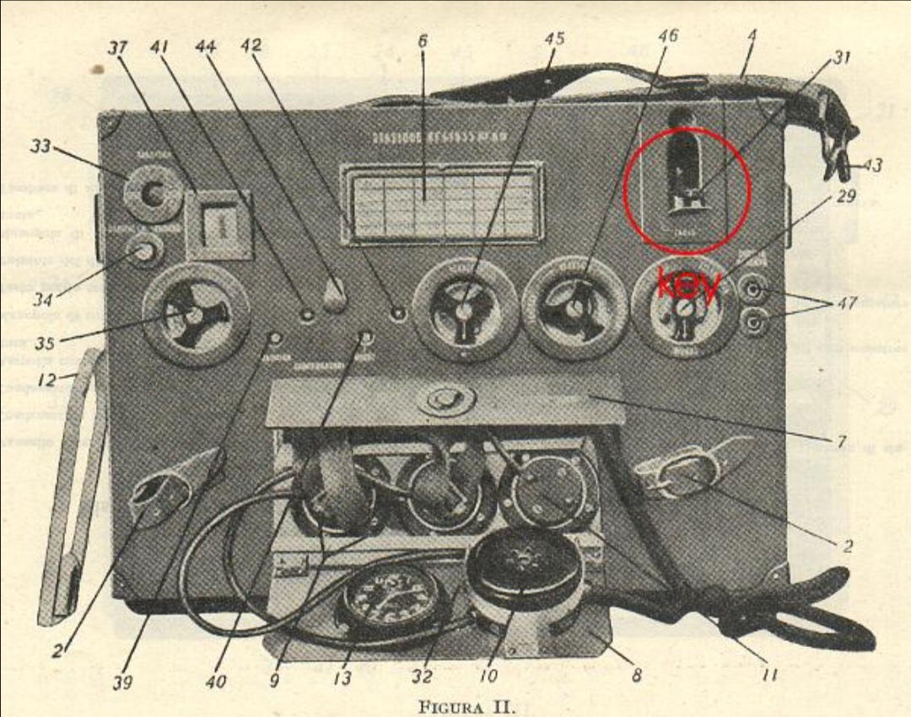
Almost nothing is known about this watch. Probably used by the Italian army during the Second World War, it was initially thought to be a dashboard clock and then mounted inside cars, but it was later discovered by collectors, thanks to a photograph of an instruction booklet, that this clock it was placed on portable military radio stations.
Reference: unknown
Price: 70 Euro (January 2022)
TAVANNES POCKET WATCH
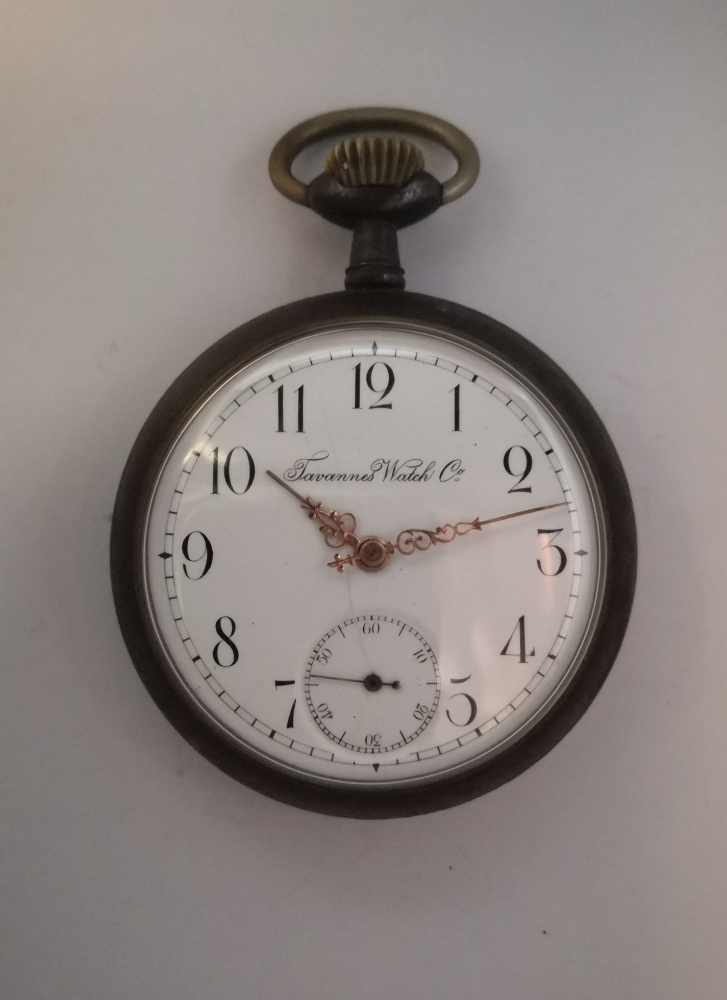
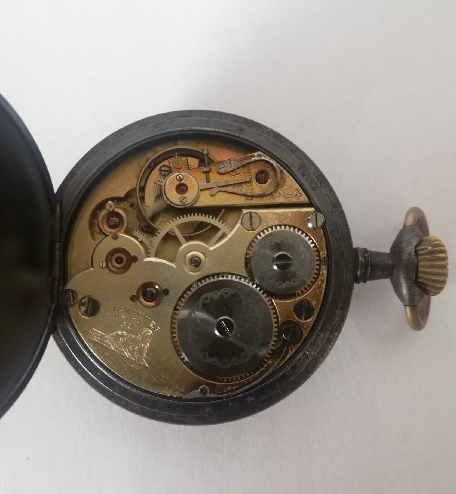
The first portable watches were pocket watches, which were widespread until 1930, when the number of wrist watches sold equaled the number of pocket watches sold. Many pocket watches on the market today have an enamel dial, specially shaped hands and have engravings on the caseback. Note in this model from around 1900 the fine swan neck adjustment, characteristic of higher end watches, not common on iron case watches like this one. Pocket watches started collecting, but as a matter of portability, wrist watches have taken over in this field too. For this reason today the ratings are low compared to the quality of these timepieces.
Reference: unknown
Price: 60 Euro (July 2020)
SWATCH
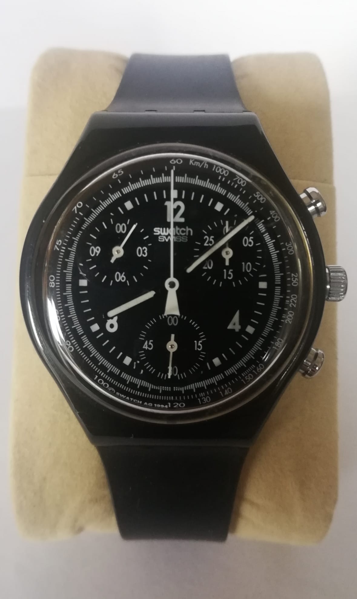
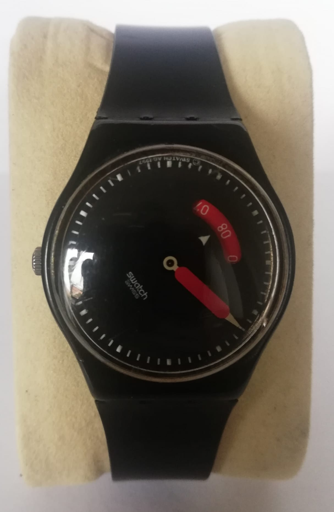
With the advent of Japanese quartz watches in the 1980s, Swiss watchmaking went through a great period of crisis. The new timepieces were in fact cheaper, more precise and easier to produce. For this reason, many watchmaking companies, especially the smaller ones, have been forced to close, while others have adapted and started producing quartz watches as well.
Swatch, founded in 1983, was the Swiss answer to these Japanese watches. Characterized by particular designs and bright colors, thanks to the low production costs, due to the use of plastic as the construction material of the crates, it was very popular and successful in the 90s. To date, we can say that Swatch has indeed saved Swiss watchmaking, just think that historic brands such as Omega and Longines are part of the swatch group.
Reference: unknown
Price: 10 Euro (Swatch cronograph 'Pure Black' in April 2022)